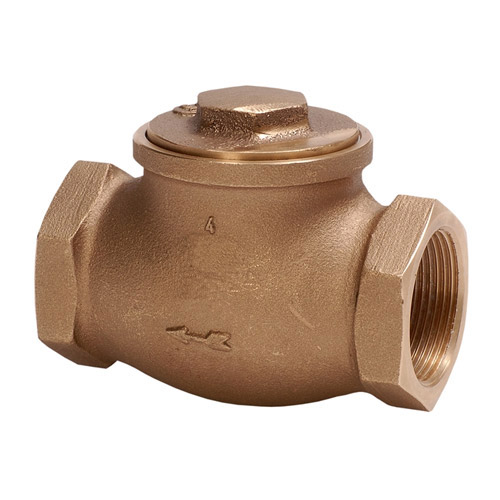
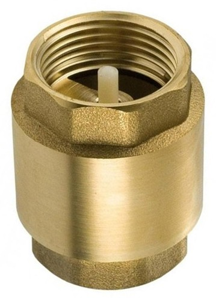
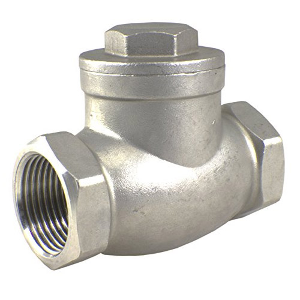
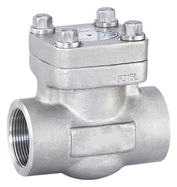
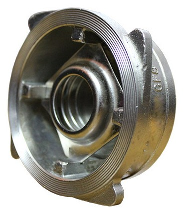
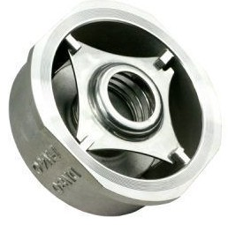
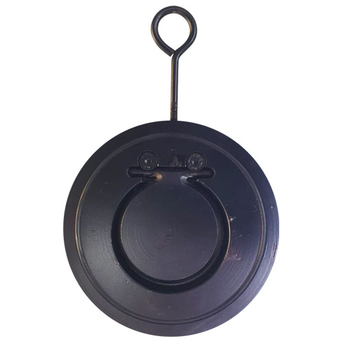
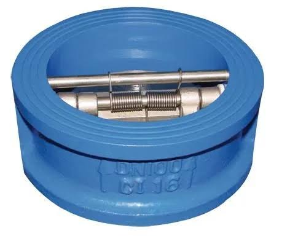

Brass Check Valve Swing Type
Sizes½" – 4"
- NPT
- BSPT
Valves · 14 products
Non-return protection — swing, lift, spring, wafer and dual-disc non-slam designs. Ask Fakhri Tools for a quote on WhatsApp, by phone or at our trade counter in Al Quoz Industrial Area 3.
Sizes½" – 4"

Sizes1½" – 12"

Sizes½" – 4"

Sizes½" – 4"

Sizes½" – 4"

Sizes½" – 2"

Sizes½" – 2"

Sizes1½" – 6"

Sizes1½" – 8"

Sizes1½" – 6"

Sizes½" – 12"

Sizes1½" – 8"

Sizes½" – 4"

Sizes2" – 12"
Our check valves (non-return valves) cover swing, spring, wafer and dual-plate designs. Flanged: C.S WCB in CL150 and CL300 from 1½" to 12", SS in CL150 and CL300 from ½" to 12", C.I swing in PN16 from 1½" to 8", and C.I dual-plate in PN16 with DI/SS disc from 2" to 12". Wafer type: C.S with SS disc up to 8" and C.I with SS304 disc up to 6".
Screwed: brass and bronze swing, brass vertical spring, SS swing #200, SS vertical 1000 WOG, SS316L swing at 600 and 1000 WOG, and forged A105 800 WOG, in NPT, BSPT or SW.
Swing check valves suit horizontal lines with steady flow. Spring and vertical check valves close faster and can sit in vertical lines with upward flow. Wafer and dual-plate types are short and light, so they fit between flanges where space is tight, such as after a pump.
Send on WhatsApp the size, type, class or PN, end connection, material and quantity.
Yes. Both names mean a valve that lets flow pass one way and stops it coming back.
Yes. We list a brass vertical spring check valve in NPT or BSPT and an SS vertical check valve at 1000 WOG, both from ½" to 4".
Dual-plate and spring types close quickly and are common on pump discharge. Send the line size and flange class on WhatsApp and we will suggest a match from our list.
Send a photo of it, or its nameplate, on WhatsApp and we will tell you if we have it.